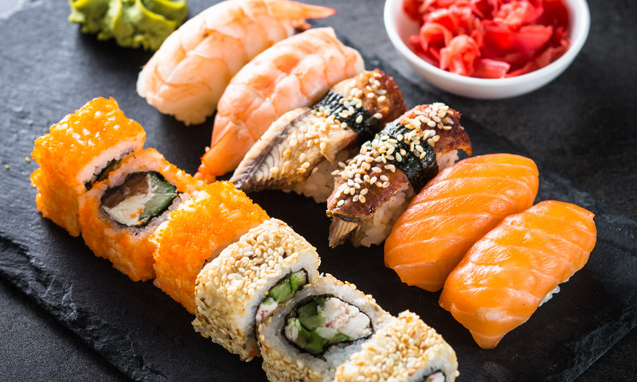

Sushi

Description
High end Japanese cuisine, mastered through great skill and patience
Ingredients
- Rice
- Salmon
- Avocado
- Philadelphia cheese
- Kombu
- Sugar
- Salt
- Vinegar
Steps
- Wash the rice 7 to 8 times stirring thoroughly to take out all the starch
- Cook the rice in a pan with water just above the rice level for 22 minutes
- Prepare salt, sugar and vinegar mixture
- Once cooked, put the rice in a bowl and while hot, pour the salt, sugar and vinegar mixture
- Let cool for about an hour
- Once cooled, put the kombu and put rice grains 3/4 up to its full length
- Place the salmon, Philadelphia cheese and avocado parts
- Roll the kombu and close it
- With a wet knife, cut it and serve